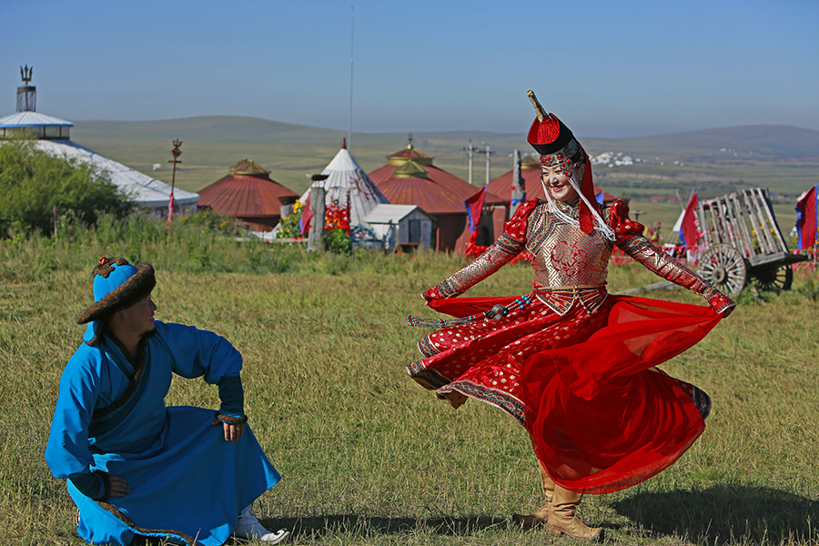

 能歌善舞蒙古族 回族服饰与回族文化 藏族人长相特征 维吾尔族传统接待礼仪 哈萨克族训鹰人 能歌善舞的蒙古族 早在旧石器时代就有人类走进了蒙古地区，此地多为平原，且水草繁多，牛马遍地，所以远古的时期的人类开始定居在此生活，其代表就是“大窑文化”。在匈奴时期，那里有几大游牧民族，其中匈奴族在首领的带领下创立了蒙古地区第一个国家。 回族服饰与回族文化 回族服饰是回族特有的文化现象，回族服饰文化是一个历史悠久、绚烂多彩、积淀丰厚的宝库。回族服饰的发展变化及多种形态，潜移默化地受到时代、地域以及周边兄弟民族习惯等影响，但在根本上或者说整体上，是受到伊斯兰文化对回回民族形成的深厚影响。 藏族人长相特征 藏族人最明显的特征是鼻骨高，鼻孔大，这是为适应高寒地区缺氧和寒冷所致；它们皮肤粗糙，在风吹日晒下，脸色多呈酱红色;男子脸型多呈用字，申字型，腮部咬肌发达，颧骨较高，三角眼细眯眼较多，女子圆脸，国字脸较多。